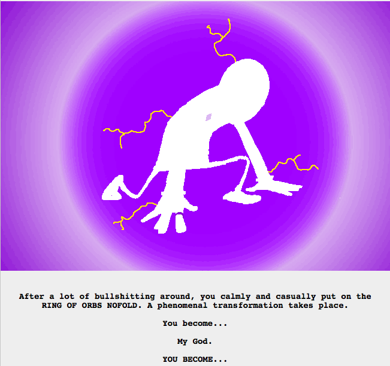
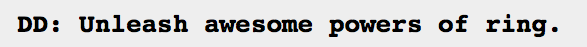
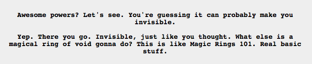
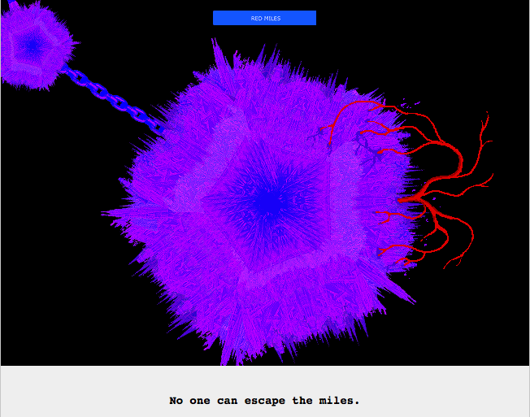

Sooooooo, apparently an unprototyped ring doesn’t change you. Either that, or DD managed to resist being changed, somehow.
And it looks like it has a bit less power. But I guess the Red Miles thing is a power inherent to the ring…Interesting that it has powers without prototyping at all, I thought unprototyped Derse and Prospit were supposed to be locked in a complete stalemate.